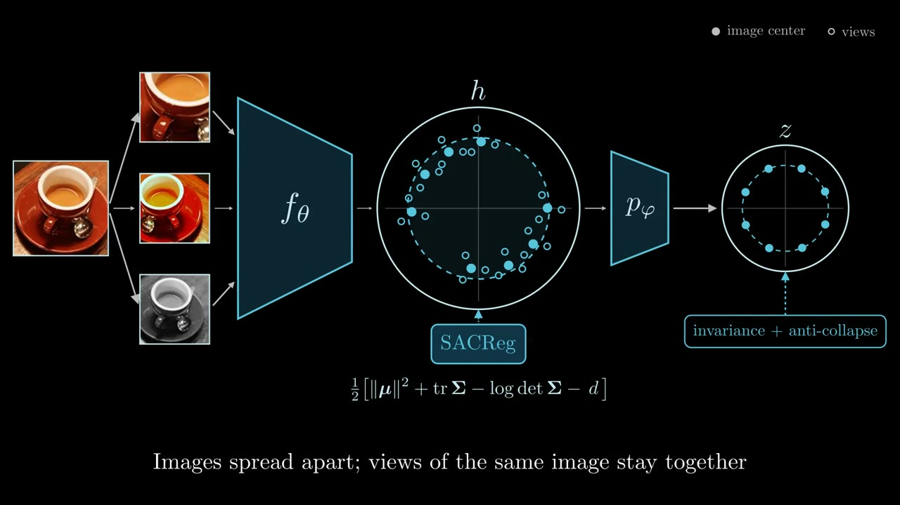
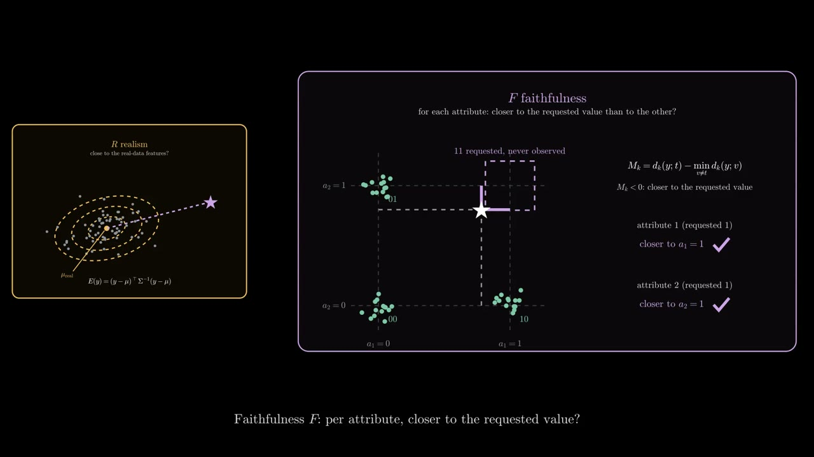
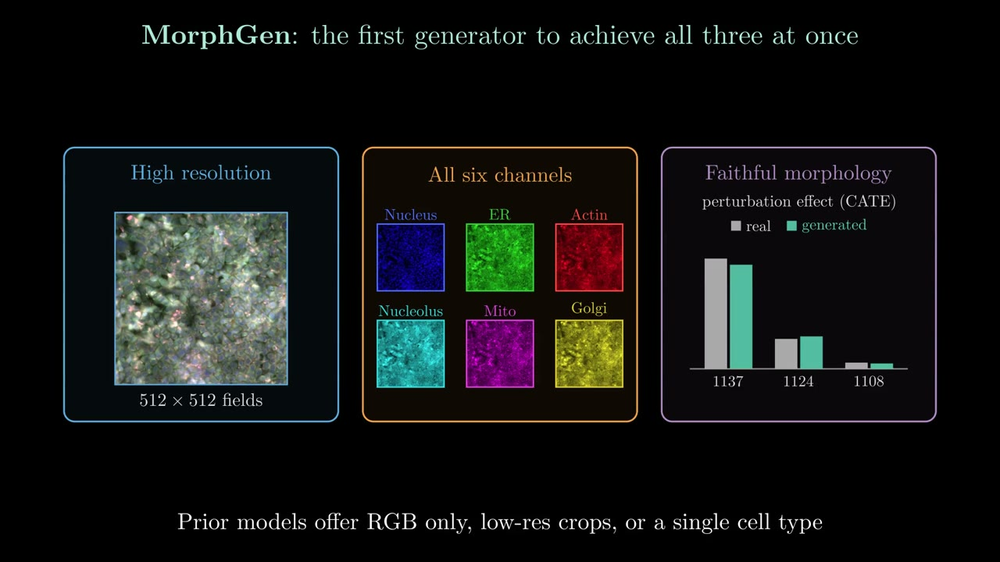
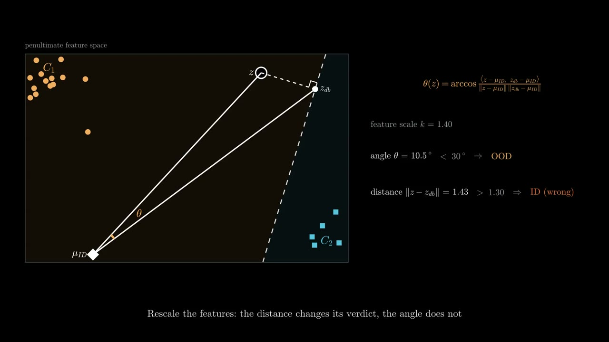
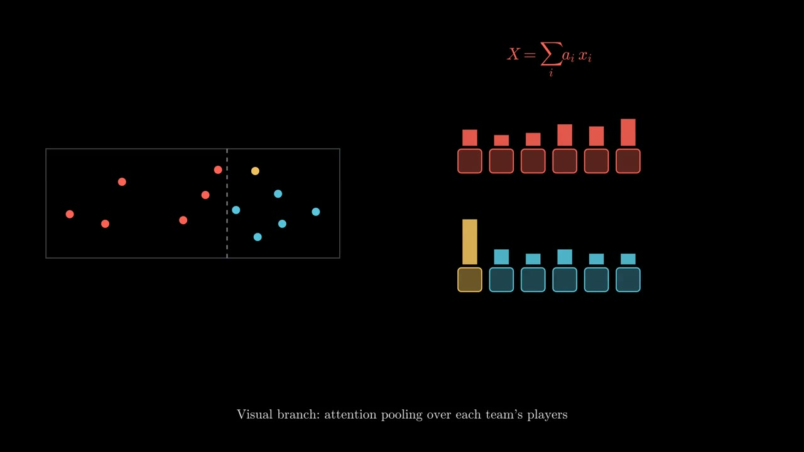
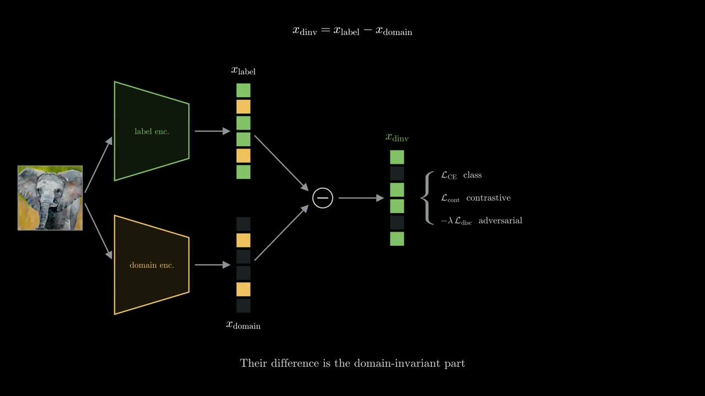

teaserλ-JEPA: Spectral Anti-Collapse Regularization for Self-Supervised Learning
Anti-collapse objectives keep the projector high-rank but can leave the backbone collapsed. SACReg regularizes the backbone directly.
Read the post →
teaserAnti-collapse objectives keep the projector high-rank but can leave the backbone collapsed. SACReg regularizes the backbone directly.
Read the post →
teaserWhen the requested condition was never observed, there is no target distribution to compare against. A per-sample trust score needs only the training data.
Read the post →
teaserA latent diffusion transformer that generates all six Cell Painting channels at full resolution, across cell types and perturbations.
Read the post →
teaserA post-hoc, hyperparameter-free OOD score: the angle between a feature and its projection onto the decision boundaries, seen from the ID mean.
Read the post →
teaserRecognizing what a volleyball team is doing from one RGB frame, with attention pooling over players and a branch for their positions.
Read the post →
teaserDomain generalization that keeps domain-specific features instead of discarding them, plus a latent-space remix augmentation.
Read the post →